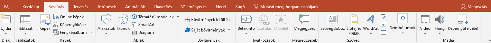
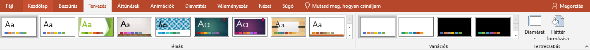

Ebben az alfejezetben az eszköztár további oldalainak hasznos funkcióit szeretném bemutatni.
A fájl fül megnyomásakor egy új oldalon megjelenik a prezentációink megnyitására és mentésére szolgáló oldal.
A beszúrás fül megnyomásakor az eszköztár átvált erre a megjelenésre.

Leghasznosabb funkciói az új dia beszúrása melyet a kezdőlapon is megtalálunk, táblázat beszórása melyekkel diáinkat feldobhatjuk táblázatba foglalt adatokkal. Beszúrhatunk még képeket alakzatokat szövegdobozt élőfejet és élőlábot, videó és hanganyagot.
A tervezés fül megnyomásakor ez fogad bennünket.

Ezen az oldalon a PowerPoint előre kiválasztott stílusai közül választhatunk magunknak melyeket aztán személyünk szerint testre is szabhatunk. Nagyon hasznos funkció mert így nem kell minden diát egyesével egységesre formálni.
Az áttűnések és az animációk a diák váltásakor megjelenő szebb váltásért és a szövegek megjelenítésének módjáért felelnek.
A diavetítés menüpontban pedig a prezentációnak amikor diavetítés formájában előadjuk ezekkel állíthatjuk be a megfelelőre.